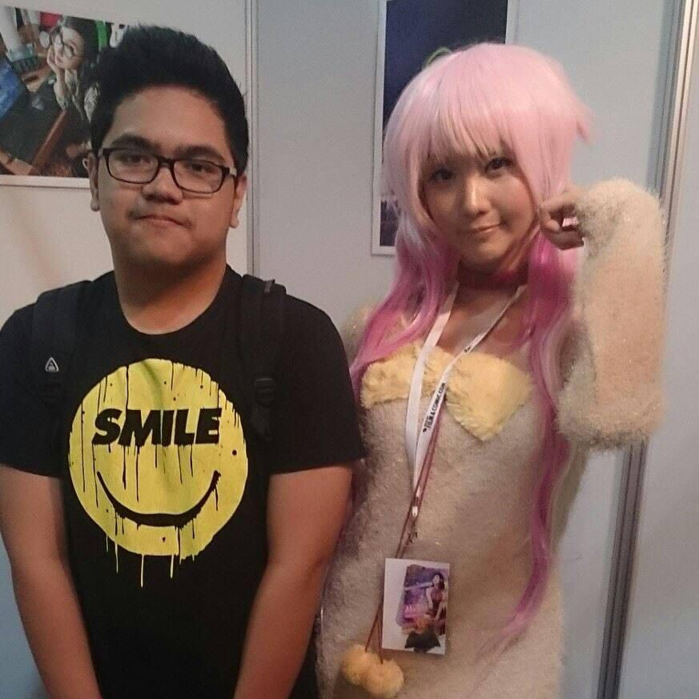
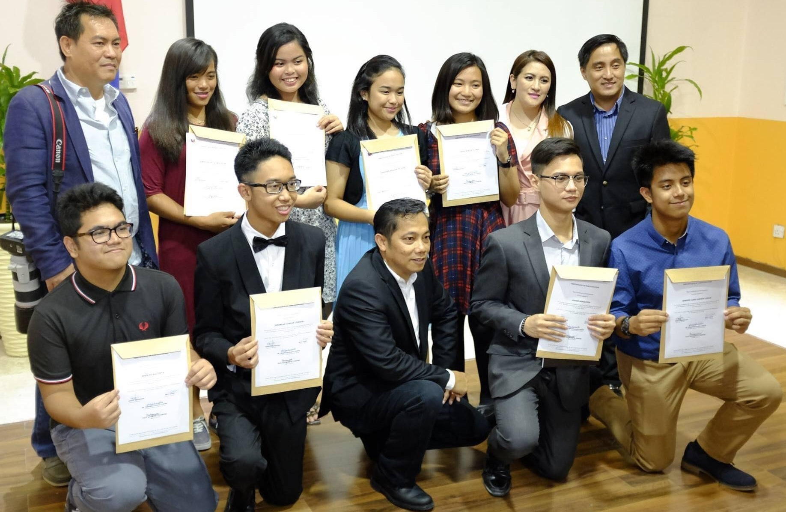

Teenage years...

pic with alodia <3
1This period in my life was where the problems arose. 2Being someone that pretty much stayed inside the house his whole life. 3Imagine being thrown into a vastly different country with a vastly different culture and types of people, I was overwhelmed to say the least. 4And my first instinct was to isolate myself from the world. 5I didn’t want to socialize with anyone at school or anywhere. 6And it didn’t help that I also didn’t know how to. 7So I became a nobody; I’m just someone who’s always in the corner playing video games. 8People just brush me off, and I just come off to people as a very chill guy.

pic with bestie :>

canon workshop
9But, people started wondering, because I always get good scores and always manage to get high honors while always slacking off. 10So people started noticing me; people wondered how this chill guy was doing good at school. 11Does he actually know what he’s doing? 12So people started approaching me and started befriending me. 13The problem is, I didn’t know how to interact with people; sure I was in a Filipino school, but it was still different. 14Their colloquial language, mannerism, and overall vibe. 15So throughout my teenage years, a lot of people came in and went away in my life. 16A lot didn’t like that I was too straightforward with my words and personality. 17I didn’t know how to sugarcoat my words and didn’t really know how to empathize with people. 18I also tried dipping my toes into relationships and a lot of them didn’t go well; except for one. 19Well, we didn’t actually end up together romantically. 20But, I think we’re in a much better state than a romantic relationship. She became almost like a twin sister to me. 21She helped me better myself in several aspects. 22She introduced me to hobbies and things that I now hold near and dear to my heart, like: anime, comics, different types of music, and art. 23But most importantly she taught me empathy. 24She helped me how to properly process my thoughts and articulate them in a manner that I won’t hurt anyone. 25It took me a long time to learn, I hurt her a couple times with my words. 26But, she didn’t falter and continued to help me develop my emotional quotient.